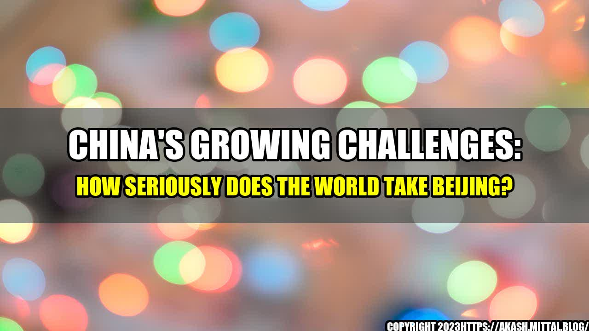

China's Growing Challenges: How Seriously Does the World Take Beijing?

Once upon a time, as the story goes, China was the world's factory. Its low cost of labor, large market, and efficient supply chains made it a global economic powerhouse. However, China's rise has come at a cost: its authoritarian governance, human rights violations, and trade practices have put it at odds with a growing number of nations.
The Numbers Speak for Themselves
The growing opposition to China can be seen in the numbers:
- Over 30 countries have publicly criticized China's treatment of Uighur Muslims in Xinjiang, where at least one million are estimated to be detained in internment camps.
- More than 120 countries supported a resolution at the United Nations calling for an investigation into the alleged human rights abuses in Xinjiang.
- A group of 39 countries, including the United States, Canada, and Japan, have formed an alliance to counter China's Belt and Road Initiative, which has been criticized for leaving some developing nations with unmanageable debt.
- Over 100 countries have banned or restricted the use of Chinese technology giant Huawei's 5G infrastructure, citing national security concerns.
- The European Union has imposed economic sanctions on China over its crackdown on Hong Kong's autonomy, and has been more vocal in calling for a united approach to China's human rights abuses.
"China's growing influence and assertiveness have sparked a backlash from many nations, who are increasingly alarmed by its disregard for human rights, its aggressive trade practices, and its territorial ambitions," says Xie Feng, China's Ambassador to the United States.
The Practical Tips for Navigating China's Challenges
So, what does this mean for businesses and individuals who have dealings with China? Here are some practical tips:
- Be aware of the risks of doing business in China, including possible surveillance, harassment, or imprisonment.
- Research the human rights policies of companies that you do business with in China, and consider whether they align with your values.
- Consider diversifying your supply chains to reduce reliance on China, which has been hit by trade tensions and the COVID-19 pandemic.
- Support international efforts to hold China accountable for its human rights abuses, such as boycotting products made with forced labor in Xinjiang.
- Stay updated on the latest developments in China, and be prepared to adjust your strategy accordingly.
The Conclusion in Three Points
- China's rise as a global superpower has led to growing opposition from many nations due to its authoritarian governance, human rights abuses, and aggressive trade practices.
- Businesses and individuals who have dealings with China should be aware of the risks and consider diversifying their supply chains to reduce reliance on China.
- Supporting international efforts to hold China accountable for its actions and staying updated on the latest developments in China can help mitigate the risks.
Curated by Team Akash.Mittal.Blog
Share on Twitter Share on LinkedIn